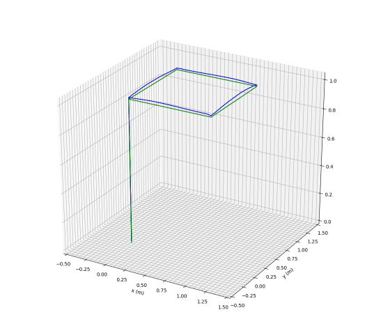
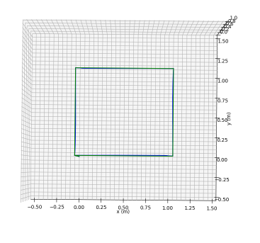

Crazyflie 2.0 Quadcopter
The objective of this project was to develop a robust control scheme to enable a quadcopter to track the desired trajectories in the presence of external disturbances.
For this project, the Crazyflie 2.0 was utilized as the quadcopter. This quadcopter is an open source project with both the source code and hardware design documented.
It was paired with ROS 1.0 and Gazebo to manage and simulate the control law.
For this project, a sliding mode controller for altitude and attitude control was designed to track the desired trajectories and visit a set of desired waypoints.
Find the full GitHub implementation here.
Quadcopter Trajectory Following
Youtube Link Here


Quadcopter Planned Trajectory (Green) vs Actual Path (Blue)
Discussion
The quadcopter was able to stay within the boundary layer of the desired trajectory, but required further tuning to decrease the boundary layer and get a more accurate trajectory following. It can be seen that the quadcopter follows the XY coordinates significantly better than the Z coordinates. This can be attributed to how the quadcopter moves; by tilting and moving at a very slow 15 second trajectory. If the trajectory was quicker (10 seconds), the quadcopter could tilt in a more stable manner and follow the desired Z trajectory closer. Further, the tuning values could be further optimized to push the robot further down the Z axis while also maintaining the necessary XY translational gains. It should also be noted that the Real Time Factor (RTF) played a tremendous role in determining the quadcopter stability. Indeed, computers with higher processing power performed better than computers with less. The same simulation is unable to be completed on a computer with an RTF of ~0.5 but can complete it with an RTF of ~0.98. Further, by recording the simulation, the quadcopter performs notably worse. This is a limitation of Gazebo.
Control Law Derivation
The exact derivation cannot be provided here as this Final Project is still being utilized by Worcester Polytechnic Insitute. However, the laws of a Sliding Mode Controller are as follows.